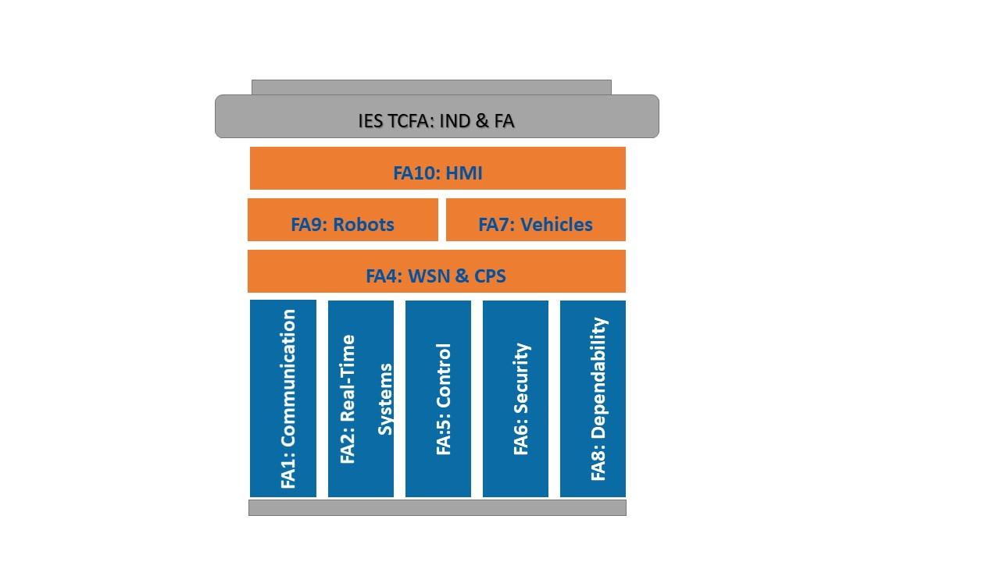

Structure of the Technical Committee on Factory Automation

The TCFA consists of SubCommittes and a number of members-at-large. The TCFA architecture consists of different layers, corresponding to its SCs: the basic layers are Industrial Communication, Real-time Systems, Control,
Security and Dependability; the cross-layers topics, such as Wireless Sensor Networks and Cyber-physical Systems, link them to the application areas, including Robots,
Vehicles and HMI capabilities.
The SubCommittes gather experts, from industry and academia, who are actively fostering initiatives within the IES in the specific domain of the Sub-Committee.
Committee Officers:
Chair: Marina Indri, marina.indri@polito.it, Politecnico di Torino, Italy
Vice-Chair: Moris Behnam, moris.behnam@mdh.se, Malardalen University, Sweden
Secretary: Marco Porta, marco.porta@unipv.it, University of Pavia, Italy
Subcommittees & Chairs
FA1: Industrial Communication Systems “Regular”
Stefano Vitturi, stefano.vitturi@ieiit.cnr.it, National Research Council of Italy (CNR-IEIIT), University of Padova, Italy
Svetlana Girs, svetlana.girs@mdh.se, Malardalen University , Sweden
FA2: Real-Time Systems in Industrial and Factory Automation
Luis Almeida, lda@fe.up.pt, University of Porto, Portugal
Jian-Jia Chen, Technische Universitat Dortmund, Germany
Thomas Nolte, thomas.nolte@mdh.se Malardalen University, Sweden
FA3: Networked Embedded Systems
Marco Di Natale, marco.dinatale@santannapisa.it, Scuola Superiore Sant Anna,Pisa, Italy
Roberto Passerone, roberto.passerone@unitn.it, University of Trento, Italy
FA4: Wireless Sensor Networks and Cyber-Physical Systems in Industrial and Factory Automation “Regular”
Frank Golatowski, frank.golatowski@uni-rostock.de, University of Rostock, Germany
Tullio Facchinetti, tullio.facchinetti@unipv.it, University of Pavia, Italy.
FA5: Industrial Automated Systems and Control “Regular”
Carla Seatzu, seatzu@diee.unica.it, University of Cagliari, Italy
Cristian Mahulea, cmahulea@unizar.es, University of Zaragoza, Spain
FA6: Security in Industrial Communication and Embedded Systems
Thilo Sauter, Thilo.Sauter@donau-uni.ac.at, Danube University, Austria
Adriano Valenzano, National Research Council of Italy, Turin, Italy
FA7: In-Vehicle Embedded Systems “Regular”
Lucia Lo Bello, lobello [at] unict.it, University of Catania, Italy
Saad Mubeen, saad.mubeen@mdh.se, Malardalen University, Sweden
FA8: Fault Tolerant and Dependable Systems
Julian Proenza, University of Balearic Islands (UIB), Spain
Sasikumar Punnekkat, sasikumar.punnekkat@mdh.se, Malardalen University,
FA9: Intelligent and Cooperative Robotics “Regular”
Marina Indri, marina.indri@polito.it, Politecnico di Torino, Italy
Antoni Grau-Saldes, antoni.grau@upc.edu, Technical University of Catalonia, Spain
FA10: Computer vision and Human-Machine Interaction in Industrial and Factory Automation “Regular”
Marco Porta, marco.porta@unipv.it, University of Pavia, Italy
Giancarlo Iannizzotto, ianni@unime.it, University of Messina, Italy